从需求到交付 · 一站式闭环
CodeFlow
用户操作手册
AI 数字员工承接澄清、执行与验收;产物与结论全程留痕
需求录入 · AI 澄清 · 派发执行 · 产物归档 · 验收回写 · 交付度量
让每一次交付,都经得起验证
https://codeflow.local:7001/workitems

ABOUT THIS DOCUMENT
文档说明
这本手册面向使用和评估 CodeFlow 的研发、产品、测试同学与平台管理员,完整介绍平台的功能边界、配置方式与日常用法。
适用读者
| 你是谁 | 你最关心 | 建议从哪读起 |
|---|
| 研发工程师 | 怎么把活交给 AI 数字员工、过程怎么看 | 第 5、6、7 章 |
| 产品 / 项目负责人 | 交付进度、返工率、一眼看到卡点 | 第 4、17 章 |
| 测试工程师 | 验收标准怎么写、产物在哪 | 第 5、6、20 章 |
| 平台管理员 | 部署、运行节点、外部系统接入 | 第 10、12、13(TAPD 为 VIP 专享)、16 章 |
| 评估 / 选型者 | 平台做什么、不做什么、值不值 | 第 1、2、20 章 |
全书结构
全书分三部分,按"先认识、再会用、后查阅"的顺序编排:
- 第一部分 · 认识产品(第 1~2 章):平台定位、核心价值、界面骨架、菜单索引。用 20 分钟读完,就知道它是什么、边界在哪。
- 第二部分 · 使用指南(第 3~20 章):从注册到日常使用的主线路径。跟着做一遍,即可独立把需求交给 AI 数字员工交付。
- 第三部分 · 参考(第 21~25 章):已知边界、默认参数、常见问题、修订记录与联系支持。不用通读,用到即查。
这本手册不讲什么
- 不讲模型怎么选型与调参——那是运行节点侧的工程决策,手册只讲怎么接进来(第 10 章);
- 不讲业务代码怎么写——AI 数字员工按你的仓库与澄清结论写,人做判断;
- 不承诺具体收益——第 1 章的数字来自真实交付环境的运行记录,不是你的预期值。
HOW TO READ THIS MANUAL
阅读指引
不同角色关心的东西不一样,不必从头读到尾。按下表挑对你的路径,十分钟上手。
按角色选路径
独立开发者 / 一人多项目
自己跑通一条需求,不依赖团队配置
推荐路径第 1、3 章 → 第 5、6、7 章 → 第 8、10、16 章
小团队负责人
交付进度、返工率、谁卡在哪
推荐路径第 1、4、17 章 → 第 5、7 章 → 第 16 章
平台与效能团队
度量口径、Token 成本、流程治理
推荐路径第 1、17 章 → 第 9、21 章 → 第 20、22 章
管理员(部署与接入)
私有化部署、运行节点、外部系统
推荐路径第 3、10 章 → 第 12、13、15 章 → 第 16、18 章
评估 / 选型者
平台边界与真实数据
推荐路径第 1、2 章 → 第 21、22 章 → 第 23 章
三条阅读约定
界面词按钮、页签、菜单等界面上的文字用「」标出,如「启动交付」「需求录入」;与正文叙述区分开,便于在界面上直接搜到。
图编号配图按「图 章号-序号」编号(如图 5-2 = 第 5 章第 2 张),目录与正文可互查;每张图都取自实机界面。
警示框橙色警示框标出容易踩坑的地方——多为"设计如此"而非故障,逐条读一遍能省很多困惑。
只记一件事:最短路径
想先看看平台能干什么,按这四步走,大约 20 分钟:
1注册并选项目
首个注册用户自动成为管理员;所有业务数据都归属项目,先选一个。
2跑起一个运行节点
AI 数字员工由你自己机器上的运行节点驱动,不在浏览器里跑。第 10 章给了三种启动方式。
3新建一条需求
写清楚标题与需求正文,能上传设计文档更好。
4启动交付并跟踪
选编队与流程,需求进入执行;在交付进度跟踪里看每一步、拿产物。
CONVENTIONS & NOTICES
约定与声明
阅读本手册前,请先了解文中使用的排版约定、修订记录以及内容的适用范围。
排版约定
| 记号 | 含义 |
|---|
新建任务 | 界面上的菜单、按钮或页签名。连续操作写成「新建任务」→「工程库」→「计划」 |
TEST_PASSWORD | 需要原样输入的内容:变量名、接口路径、命令。 |
| 提示框 | 橙色提示框给出用法建议;蓝色说明框给出边界、前提或需要留意的行为。 |
| 图 5-1 | 截图按「图 章号-序号」编号。截图中的数据来自演示环境,账号信息已做遮盖。 |
修订记录
| 版本 | 日期 | 主要变化 |
|---|
| v2.1.0 | 2026 年 11 月 | 全册版式重构:每章增加整页扉页、章/节两级目录与真实页码;新增关键数字卡、对比表、FAQ、已知边界、参数速查与尾页二维码 |
| v2.0.4 | 2026 年 11 月 | 新增「联系与支持」章与 PDF 封底页(公众号二维码) |
| v2.0.3 | 2026 年 11 月 | 客户演示前整改五项:状态模板按需求类型分域;补「同步外部系统」端点;按钮文案整改;消耗口径统一为 Token;空态友好化 |
| v2.0.2 | 2026 年 11 月 | 全册按最新界面实机重写,改为三部分结构,新增阅读指引、已知边界与默认参数速查,配图重编 |
此处只列最近四个版本,完整记录见第 24 章「版本更新记录」。
内容声明
- 以实际版本为准。产品持续迭代,界面文字与布局可能与截图略有差异;功能行为以你正在使用的版本为准。
- 演示数据。文中被测系统均为公开演示站点,数字来自演示环境的实际运行记录,不代表在你的业务系统上的效果。
- 边界如实说明。每项功能的前提与限制写在对应章节的说明框里,并在第 21 章「已知边界与使用须知」集中列出;其中标注「首次使用请先读」的对接项,建议按提示先做一次连通性验证。
- 验收结论由人给出。工具替人关单,等于把验收责任扔给机器——所以平台只回写交付结论与证据,不代改外部单据状态。
CONTENTS
目录
全书分三部分:先认识产品,再按工作流程讲解每项功能的用法,最后是参考资料与支持方式。
第一部分 · 认识产品
01平台概览:CodeFlow 是什么10
1.1平台定位10
1.2核心价值与关键数据10
1.3它不做什么11
1.4与传统做法的对比11
1.5适用角色与典型场景11
02界面结构与个性化14
2.1登录与项目选择14
2.2界面骨架15
2.3菜单导航15
2.4主题工作台与个性化17
第二部分 · 使用指南
03快速开始:从注册到跑通第一条需求20
3.1四步引导页20
3.2建议的上手节奏20
04项目与项目总览22
4.1项目是数据的边界22
4.2项目总览的八张卡22
4.3失败与超时调度23
05需求:从录入到交付的主线25
5.1需求录入看板25
5.2新建需求26
5.3需求详情27
5.4启动交付(把活交给 AI 数字员工)29
5.5删除与回收站29
06AI 需求澄清对话31
6.1为什么先澄清31
6.2澄清面板怎么用31
6.3澄清结论去哪了32
07交付进度跟踪:看 AI 数字员工干活34
7.1当前派发与历史执行34
7.2四步交付流程与完成门35
7.3失败重试与产物归档35
7.4运行日志与实时终端36
7.5人工介入:解开僵局的标准动作37
08AI 数字员工与编队39
8.1AI 数字员工39
8.2版本审核39
8.3编队39
09交付流程(流程模板)42
9.1流程模版42
9.2模版间与编队工作流42
10运行节点管理44
10.1运行节点是什么44
10.2三种运行方式44
10.3状态、容量与分组45
10.4运维红线45
11代码仓库与 AI 技能47
11.1代码仓库47
11.2仓库关系图48
11.3AI 技能49
12外部连接:禅道闭环51
12.1建绑定(三步)51
12.2闭环怎么转51
13外部连接:TAPD(VIP 专享)54
13.1建绑定(四步)54
13.2同步进来的东西长什么样55
13.3交付结论怎么回写55
13.4部署前提56
14消息渠道(钉钉/飞书)58
14.1渠道绑定58
14.2通知设置里的 IM 列58
15个人设置与 MCP 令牌60
16项目设置与平台配置62
16.1项目设置组62
16.2平台配置63
16.3成员与角色64
17运行记录、交付分析与操作审计67
17.1运行记录67
17.2交付分析68
17.3操作审计与 AI 记忆68
18定时任务:让交付按计划自己发生71
18.1两个页签各看什么71
18.2新建一个定时任务71
18.3任务详情与运行记录72
19关于平台与文档中心74
18.1交付 9 号线74
18.2文档中心与 MCP 技能包75
20日常怎么用:推荐工作流77
20.1场景 A:缺陷全自动修复与回写77
20.2场景 B:平台内需求 → 交付77
20.3场景 C:外部 CLI 里操作平台77
20.4三条实践建议78
第三部分 · 参考
21已知边界与使用须知80
21.1平台行为边界(设计如此)80
21.2能力范围边界(当前不做)80
21.3运维红线80
22默认参数速查82
22.1模型与执行参数82
22.2外部系统与凭据82
22.3界面与文件82
23常见问题84
23.1派发与执行84
23.2澄清与验收84
23.3外部系统与集成84
23.4账号、令牌与数据85
24版本更新记录87
24.1修订记录87
25联系与支持89
25.1支持渠道89
25.2扫码关注公众号89
01
CHAPTER 01 / PRODUCT OVERVIEW
平台概览:CodeFlow 是什么
CodeFlow 是一套从需求到交付的 AI 交付平台——需求说清楚,后面的活 AI 干,人只做澄清与验收。
本章内容
1.1平台定位10
1.2核心价值与关键数据10
1.3它不做什么11
1.4与传统做法的对比11
1.5适用角色与典型场景11
01平台概览:CodeFlow 是什么
CodeFlow 是一套从需求到交付的 AI 交付平台——需求说清楚,后面的活 AI 干,人只做澄清与验收。
1.1平台定位
它不替你想清楚要做什么,它替你把做过的每一步留下来。
写代码已经很快了,真正拖慢交付的是上下文在人和工具之间反复丢失:需求散落各处、每步做完就散、换人接手全部重来。CodeFlow 把一次交付拆成一条有状态、可回看、可交接的交付主线:
▸
需求怎么进来
禅道、TAPD 自动同步,或平台内直接新建;外部来源需求在标题下带来源标识,点一下直达原始单据。
◈
AI 怎么接活
开工前先反问一轮,产出 spec.md 与 plan.md;澄清结论随派发注入执行上下文,不再靠口头对齐。
▤
在哪台机器上干
运行节点装在你自己的机器上主动连回平台,代码与被测系统可以全在内网,平台不需要访问你的机器。
◫
产物和结论怎么留
过程文档、脚本、汇总报告归档在需求详情里,可下载可预览;交付结论按渠道回写禅道 / TAPD 评论。
✓
人什么时候必须介入
澄清时回答、方案确认时点头、验收时判断。工具省掉的是"盯着干活",不是"做判断"。
1.2核心价值与关键数据
从"能跑起来"到"敢用它的结论",每一项能力都围绕可信与可持续来设计。以下数字取自真实交付环境的运行记录:
20~50分钟
单条需求全自动开发
四步交付流程,从澄清到归档的实测耗时区间
19个
澄清对话真实反问
覆盖边界、技术栈、验收标准、回滚策略四类
8个
一次交付归档产物
过程文档、工具脚本、汇总报告,全部可下载
0次
外部单据代改状态
只回写交付结论,关闭与验收仍由人确认
| 实测项 | 数字 |
|---|
| 单条需求全自动开发耗时 | 20~50 分钟(四步交付流程) |
| 压测类交付实测 | 20 并发 × 50 次:50/50 成功,QPS 1975.77,错误 0 |
| 全链路交付实测 | 浏览 → 加购 → 下单 → 管理端发货 → 已发货,走通 |
| 澄清对话真实反问 | 最多 19 个问题(边界 / 技术栈 / 验收标准 / 回滚) |
不同团队的需求复杂度、模型选择和运行环境差异很大,建议先用一条真实需求试点,再决定接入团队流程。
1.3它不做什么
划边界比吹功能重要。以下四条是产品设计的底线,不是当前版本的缺失:
✕
不是"一句话生成整个系统"的魔法
需求本身说不清,它救不了——AI 会停下来反问你,这是设计而非故障。
◈
不是又一个 AI 编程工具
Claude Code、Codex、Cursor、Gemini 是干活的手,CodeFlow 是派活、盯进度、收结果、留证据的那一层,不绑厂商。
↔
不替代需求管理与协作工具
需求在禅道里就从禅道来,交付完把结论写回禅道评论,不让你换掉在用的东西。
✓
不能替你验收
产物、测试记录、部署结果都留给你,"这算不算做完了"由人回答。
1.4与传统做法的对比
| 环节 | 传统做法 | 使用 CodeFlow |
|---|
| 需求澄清 | 口头或会议里问,结论散落在聊天记录 | 开工前结构化反问,结论落成 spec.md 与 plan.md 随交付归档 |
| 进度掌握 | 靠问人、靠盯群消息 | 需求详情里实时四步交付流程,卡在哪一步、失败原因直接写明 |
| 失败处理 | 逐条翻日志,人工判断重跑 | 失败派发一键重试,前几轮记录一条不少,失败归因写在面板上 |
| 产物归档 | 散在个人目录与聊天附件 | 过程文档、脚本、汇总报告入库,可下载可预览,随需求长期留存 |
| 需求来源 | 需求、缺陷、群消息各在一处 | 禅道 / TAPD 自动入库,带来源标识,一条需求一条交付轨迹 |
| 状态闭环 | 工具或人随手关单 | 只回写交付结论与证据,"已解决 / 关闭"由人在源头确认 |
1.5适用角色与典型场景
不同角色在同一个平台上各取所需,数据彼此贯通:
研发工程师
关心活派下去没有、过程能不能回看
推荐路径写需求 → 澄清 → 启动交付 → 在交付进度跟踪里盯四步 → 验收产物
测试工程师
关心验收标准清不清楚、证据全不全
推荐路径先用澄清对话把验收标准写成可执行检查项 → 交付后按产物核对
项目负责人
关心交付到哪了、哪类需求总返工
推荐路径项目总览看八张 KPI → 交付分析看阶段耗时与返工率 → 定位瓶颈环节
平台管理员
关心接入稳不稳、密钥与凭据安全
推荐路径运行节点常驻 + 外部系统绑定 + 主密钥统一 + 操作审计留痕
02
CHAPTER 02 / INTERFACE & PERSONALIZATION
界面结构与个性化
登录后选项目;界面是「顶栏 + 左树 + 内容区 + 状态栏」的统一骨架,主题色与壁纸可换,骨架不变。
本章内容
2.1登录与项目选择14
2.2界面骨架15
2.3菜单导航15
2.4主题工作台与个性化17
02界面结构与个性化
登录后选项目;界面是「顶栏 + 左树 + 内容区 + 状态栏」的统一骨架,主题色与壁纸可换,骨架不变。
2.1登录与项目选择
 图 2-1 登录页(左:品牌与价值区「光点推进链」;右:登录表单)
图 2-1 登录页(左:品牌与价值区「光点推进链」;右:登录表单)
- 首次部署通过
http://<平台地址>:7001/register 注册首个用户,建组织即成为管理员;之后所有成员从登录页进入。 - 登录页背景为 editorial 风格:纸底 + 双光晕 + 流星层;左侧展示平台价值——从需求澄清到交付的七站「光点推进链」,光点走过一段点亮一段,配合轮播的价值主张;右侧为登录表单。
- 登录页固定亮色,不随主题变化;语言跟随浏览器,可在登录后右上角切换。
登录后先选项目——所有业务数据都归属某个项目:
 图 2-2 项目选择页(登录后第一站;右上「平台配置」直达平台级配置)
图 2-2 项目选择页(登录后第一站;右上「平台配置」直达平台级配置)
2.2界面骨架
| 区域 | 说明 |
|---|
| 顶栏 | 品牌 → 当前页面路径 → 搜索框(⌘K 命令面板)→ 项目切换 → 通知 → 外观切换 → 用户菜单 |
| 左侧导航树 | 顶部独立一项 项目总览;下面五组:需求交付(需求录入/交付流程/运行记录)、分析(交付分析/操作审计)、执行与自动化(定时任务/运行节点/AI 数字员工)、配置资产(代码仓库/AI 记忆/AI 技能/状态流转)、项目设置(外部连接/成员管理/配置备份/环境变量/回收站);树尾还有 文档中心(F1)、设置(⌘,)、关于平台 |
| 内容区 | 各功能页;列表类页面为「墨色横幅 + 一句话说明 + 工具栏 + 内容面板」的统一骨架 |
| 底部状态栏 | 命令面板入口 / 当前项目 / 语言切换 / 明暗外观切换 / 平台版本 |
2.3菜单导航
十七个入口分成五组(顶部「项目总览」与树尾三个入口未列入下表)。下表给出每个菜单的用途与对应章节,可作为全书的索引:
| 分组 | 菜单 | 用途 | 章节 |
|---|
| 总览 | 项目总览 | 新增多少、交付多少、还压着什么(KPI 八卡) | 第 4 章 |
| 需求交付 | 需求录入 | 录入需求与缺陷,发起澄清、派发交付、跟踪结果 | 第 5 章 |
| 交付流程 | 定义项目的交付流程模板与步骤完成门 | 第 9 章 |
| 运行记录 | 全部派发执行历史与单次执行详情 | 17.1 |
| 分析 | 交付分析 | 实时看板 / 人机协作 / 工作项交付 / 阶段耗时 | 17.2 |
| 操作审计 | 全部敏感操作留痕,可筛选、可导出 | 17.3 |
| 执行与自动化 | 运行节点 | 执行环境注册、启动命令、状态与容量 | 第 10 章 |
| 定时任务 | 按计划自动派发数字员工,含定时需求与运行记录 | 第 18 章 |
| AI 数字员工 | 可执行角色定义、版本审核 | 8.1、8.2 |
| 配置资产 | 代码仓库 | 仓库绑定与仓库关系图 | 11.1、11.2 |
| AI 记忆 | 长期记忆的查看与清理 | 17.3 |
| AI 技能 | 挂到数字员工上的能力包 | 11.3 |
| 状态流转 | 按需求类型分域的状态机模板 | 16.1 |
| 项目设置 | 外部连接 | 禅道 / TAPD 绑定、消息渠道 | 第 12~14 章 |
| 成员管理 | 成员、角色与访问申请 | 16.3 |
| 配置备份 | 一键备份与恢复项目配置 | 16.1 |
| 环境变量 | 项目级环境变量,值默认脱敏 | 16.1 |
| 回收站 | 已删需求与项目,可恢复 | 5.5 |
2.4主题工作台与个性化
 图 2-3 主题工作台(预设色板 + 自定义色 + 自定义背景)
图 2-3 主题工作台(预设色板 + 自定义色 + 自定义背景)
- 主题颜色:10 个精选预设,或用取色器自定义;「跟随平台」恢复品牌色。切换即时生效,链接 / 高亮 / 选中态 / 图表全部跟随;
- 自定义背景:上传本地图片作为工作台壁纸(前端自动压缩,超 1.2MB 拒绝),「背景遮罩」滑杆实时调节清晰度与可读性;仅保存在本机浏览器,不随账号漫游;
- 明暗模式(☀/🌙/🖥)在底部状态栏的「切换外观」按钮,与主题色独立组合。
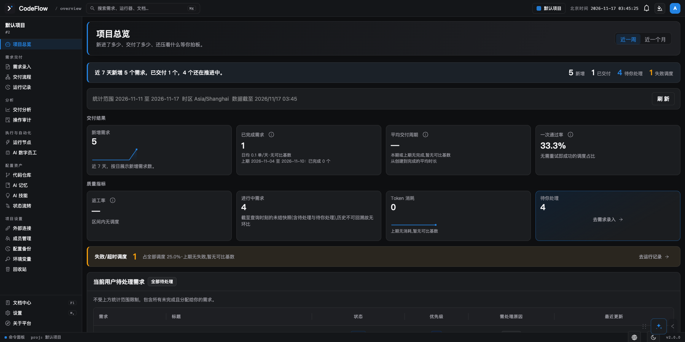
图 2-4 暗色外观下的项目总览(与图 4-1 同一页面)
03
CHAPTER 03 / GETTING STARTED
快速开始:从注册到跑通第一条需求
注册即管理员 → 4 步引导跑起运行节点 → 建第一条需求走通全链路。先跑通一条,再并行多条。
03快速开始:从注册到跑通第一条需求
注册即管理员 → 4 步引导跑起运行节点 → 建第一条需求走通全链路。先跑通一条,再并行多条。
3.1四步引导页
第一次登录并选择项目后,系统自动进入 4 步引导页(/onboarding,可随时跳过,也能从「关于平台」页重放):
| 步 | 内容 | 要点 |
|---|
| 1 认识模型 | 「需求进 · 交付出」的交付流程示意 | 记住关键认知:AI 数字员工由你部署的运行节点驱动,不在浏览器里 |
| 2 跑起运行节点(必做) | 可复制的启动代码块 + 实时探测 | 在「运行节点」页注册拿到 ID/Token → 机器上配 env → 启动 daemon;本页每 3 秒自动探测,状态变绿即可继续 |
| 3 认识预置阵容 | 开发与评审编队、AI 数字员工、交付流程模板 | 开箱可用;自定义编队 / AI 生成流程 / 登记仓库为可选 |
| 4 打通需求源 | 禅道绑定三要素 + 测试连接 | 可选:跳过也能直接「新建需求」体验交付 |
- 引导状态保存在浏览器本地;换浏览器或清除存储后会再次出现,点「完成」即不再提示。
- 未配置运行节点时点「跳过引导」会二次确认(防止新手漏掉关键一步)。
3.2建议的上手节奏
先跑通一条先跑通一条需求(澄清 → 派发 → 验收),再给 AI 数字员工配更多运行节点,然后开始并行两条,最后把踩过的坑沉淀进 AI 技能和 AI 记忆。不要一上来就配四个角色。
4步
交付流程
分析与分支准备 → 编码与测试 → 验证与交付 → 交接评审
24轮
单次执行轮次上限
模型调用轮次不够时可在运行节点 env 调整
04
CHAPTER 04 / PROJECT OVERVIEW
项目与项目总览
项目是数据归属的边界;项目总览回答"新增了多少、交付了多少、还压着什么"。
本章内容
4.1项目是数据的边界22
4.2项目总览的八张卡22
4.3失败与超时调度23
04项目与项目总览
项目是数据归属的边界;项目总览回答"新增了多少、交付了多少、还压着什么"。
4.1项目是数据的边界
- 登录后先选项目;需求、编队、交付流程、运行节点、外部连接等所有业务数据都归属某个项目。
- 一个用户可属于多个项目,顶部项目切换器可随时切换;「我的项目 / 所有项目」页签过滤列表;右上「平台配置」直达平台级配置;项目删除进「项目回收站」,可恢复。
4.2项目总览的八张卡
 图 4-1 项目总览——「交付结果 + 质量指标」两排 KPI 卡,同构等高
图 4-1 项目总览——「交付结果 + 质量指标」两排 KPI 卡,同构等高
项目总览(左树第一项)KPI 卡两排四列、同构等高:
8张
KPI 卡
上排交付结果,下排质量指标,同构等高
7天
默认统计窗口
右上「近一周 / 近一个月」可切换
1条
结论条
页顶一句话回答"近 7 天新增多少、交付多少、还压着什么"
- 上排「交付结果」:新增需求 / 已完成需求 / 平均交付周期 / 一次通过率;
- 下排「质量指标」:返工率 / 进行中需求 / Token 消耗 / 待你处理;
- 每卡为「标题 + 大数字 + 至多两行说明」,趋势卡带迷你折线,口径说明收进标题旁的 ⓘ 悬浮;
- 页顶一句话结论条直接回答「近 7 天新增多少、交付多少、还压着什么」;右上「近一周 / 近一个月」切换统计范围。
4.3失败与超时调度
项目总览下方列出失败与超时调度:派发因模型配额、基础设施中断或完成门未达标而失败的记录,直接给出「重试」入口,不必先去运行记录里翻。调度项按失败原因归类,便于判断是模型侧、仓库权限侧还是流程配置侧的问题。
⚠ 删除项目会级联影响其下需求与配置,属高危操作,请先在「配置备份 / 回收站」确认后再执行。
05
CHAPTER 05 / REQUIREMENT LIFECYCLE
需求:从录入到交付的主线
需求是全平台的中心对象:录入 → 澄清 → 启动交付 → 跟踪 → 验收,每一步在详情页都有归属。
本章内容
5.1需求录入看板25
5.2新建需求26
5.3需求详情27
5.4启动交付(把活交给 AI 数字员工)29
5.5删除与回收站29
05需求:从录入到交付的主线
需求是全平台的中心对象:录入 → 澄清 → 启动交付 → 跟踪 → 验收,每一步在详情页都有归属。
5.1需求录入看板
 图 5-1 需求看板(状态分列卡片式)
图 5-1 需求看板(状态分列卡片式)
| 元素 | 说明 |
|---|
| 范围页签 | 全部 / 待我决策 / 我创建的 / 指派给我的 / 我关注的 / 我参与的 |
| 类型/状态筛选 | 按需求类型(需求/缺陷)与状态节点过滤 |
| 搜索框 | 按需求 ID 或标题搜索 |
| 标签筛选 / 高级筛选 | 组合条件;高级筛选支持优先级、创建者等更多维度 |
| 卡片 | 类型、状态、优先级、标题、创建者、当前处理人;外部来源需求带「来自 + 来源平台名」链接(如「来自 ZenTao」),点击直达禅道原始对象 |
| 视图切换 | 看板 / 列表 / 表格三种视图 |
 图 5-2 需求高级筛选
图 5-2 需求高级筛选
5.2新建需求
入口:需求页右上角「+ 新建需求」。
必填:类型(需求/缺陷)、标题、需求/设计文档(Markdown);可选:优先级。 创建后进入需求详情页。需求支持上传需求/设计上下文附件(任意类型,单个 5MB、总共 20MB,可粘贴截图)。
5.3需求详情
 图 5-3 需求详情(以新建状态的需求为例;元信息条 / 动作区 / 需求文档 / 附件 / 评论时间线)
图 5-3 需求详情(以新建状态的需求为例;元信息条 / 动作区 / 需求文档 / 附件 / 评论时间线)
| 元素 | 说明 |
|---|
| 元信息条 | 类型 / 状态 / 优先级 / 创建者 / 处理人 / 标签,状态与标签可直接改 |
| 启动交付 | 指派 AI 数字员工并按交付流程启动自动交付(见 5.4) |
| 交给同事处理 / 流转到其他状态 | 需求交接给同事人工接棒;状态按模板流转 |
| 需求/设计文档 | Markdown 编辑;外部来源需求只读并显示「由外部需求维护」 |
| 评论 & 时间线 | 全部沟通与系统事件(创建/流转/派发/交接/回写)按时间倒序 |
| 右栏 | AI 需求澄清(第 6 章)、任务信息、交付进度跟踪(第 7 章) |
| 分享 | 生成只读分享链接(产物页无需登录可看) |
外部来源需求(禅道拉取)在标题下显示来源标识,删除受保护——必须回禅道处理,平台侧不可删。
下面是一条真实交付中的需求:左侧是需求正文,右栏是实时交付进度(本图与图 5-4 取自同一次真实交付,四步全部通过):
 图 5-4 真实交付中的需求(右栏实时交付面板 + 交付产物)
图 5-4 真实交付中的需求(右栏实时交付面板 + 交付产物)
发表评论有即时反馈(左下角「评论已发送」提示):
 图 5-5 发表评论:AI 数字员工即时回复验收结果(评论与时间线按序留痕)
图 5-5 发表评论:AI 数字员工即时回复验收结果(评论与时间线按序留痕)
5.4启动交付(把活交给 AI 数字员工)
1点「启动交付」
右栏进入「AI 需求澄清」向导,选择编队与 AI 数字员工。
2确认后平台创建派发
需求进入「执行中」,生成 Dispatch ID。
3运行节点接手
在线则立即开跑;离线则排队等待并显示原因(第 7 章)。
交付开启后,需求右上出现「关闭交付」;关闭后不再接受新的自动派发,评论区 @ AI 数字员工也会被拦截提示。
5.5删除与回收站
删除需求进回收站(左树「项目设置 → 回收站」),可恢复;外部来源需求不可删除。
 图 5-6 需求回收站
图 5-6 需求回收站
06
CHAPTER 06 / AI CLARIFICATION
AI 需求澄清对话
启动交付前先对齐验收标准——澄清对话是返工率的第一道闸。
本章内容
6.1为什么先澄清31
6.2澄清面板怎么用31
6.3澄清结论去哪了32
06AI 需求澄清对话
启动交付前先对齐验收标准——澄清对话是返工率的第一道闸。
 图 6-1 AI 需求澄清向导(第一步:按编队 → AI 数字员工两级选择交付主体)
图 6-1 AI 需求澄清向导(第一步:按编队 → AI 数字员工两级选择交付主体)
6.1为什么先澄清
4类
澄清维度
边界 · 技术栈 · 验收标准 · 回滚策略
2份
产出文档
spec.md 与 plan.md 直接入库
这 19 个问题如果拖到开发一半才冒出来,每一个都是一次返工。澄清的价值不在于"问得多",而在于把没说清的变成说清的:哪些不归这次交付管、用什么技术栈、"做完了"怎么判、失败怎么退。
6.2澄清面板怎么用
1进入澄清
右栏点「AI 需求澄清」,或在评论区 @AI数字员工 直接提问。
2回答问题
按四类维度逐条回答:边界 / 技术栈 / 验收标准 / 回滚策略。
3生成文档
回答完成后,平台把结论写成 spec.md 与 plan.md 存入附件。
4随交付注入
下一次派发自动带上这两份文档,不用再口头交代一遍。
- 启动交付前:右栏「AI 需求澄清」进入向导,按编队 → AI 数字员工两级选择交付主体;
- 交付中:直接在评论区
@AI数字员工 提问,AI 数字员工经平台 MCP 实时读取需求内容后作答与追问,形成澄清会话; - AI 数字员工的每次回复都带用量(模型/Token)与耗时,可在时间线追溯。
发送方式可切换:输入框旁的入口标明当前模式——默认 Shift+回车 发送(回车换行),可切为回车发送;切换会写入个人偏好,重新登录后保持。回复进行中输入框会禁用并显示动态指示,可随时「终止响应」。
⚠ 需求描述写不清是交付返工的最大来源。建议启动交付前先用澄清对话把验收标准对齐——这比事后返工便宜得多。
6.3澄清结论去哪了
澄清不是聊天记录,而是交付输入:结论落成 spec.md 与 plan.md 存入需求附件,并在派发时随上下文注入执行环境;时间线里保留每一轮问答与用量,可回看"当时为什么这么定"。需要人工把关时,把澄清意见留在评论区,下一轮派发会读到它继续(见 7.5)。
07
CHAPTER 07 / DELIVERY TRACKING
交付进度跟踪:看 AI 数字员工干活
执行中的每一步都落在需求详情里:卡在哪、为什么失败、产物在哪,失败可一键重试。
本章内容
7.1当前派发与历史执行34
7.2四步交付流程与完成门35
7.3失败重试与产物归档35
7.4运行日志与实时终端36
7.5人工介入:解开僵局的标准动作37
07交付进度跟踪:看 AI 数字员工干活
执行中的每一步都落在需求详情里:卡在哪、为什么失败、产物在哪,失败可一键重试。
图 7-1 交付进度跟踪面板(当前派发 + 历史执行)
7.1当前派发与历史执行
| 元素 | 说明 |
|---|
| 当前派发卡 | AI 数字员工 / 流程步骤 / 状态(含失败红标)/ Dispatch ID / 耗时 / 运行节点名 |
| 查看执行 | 打开该派发的实时执行视图(终端/日志) |
| 重试 | 失败后原样重发 |
| 历史执行 | 全部执行记录(含交接产生的下游派发),可看执行详情 |
| 控制记录 | 指派 / 暂停 / 恢复 / 停止等人工操作留痕 |
| 交付流程 阶段耗时 / 近期动作 | 每一步耗时与最新进展 |
| 产物 | AI 数字员工产出的文件(deliverables),可直接下载 |
| 执行图谱 | 步骤与交接的图形化视图 |
排队原因会明说:运行节点不在线时派发不会空转,而是按指数退避等待,面板直接显示原因(如「等运行器上线」「等待运行器容量」)与已等时长;运行节点上线后自动唤醒,无需人工重发。
7.2四步交付流程与完成门
1分析与分支准备
读懂需求与代码库,准备分支与实施方案。
每一步都有完成门:达标才往下走,不达标停在当前步并说明原因。完成门是流程模板里定义的(见第 9 章),验收标准越明确,完成门越可判定。
7.3失败重试与产物归档
失败了就地重试:某次派发失败(模型配额、基础设施中断等)时,面板给出「重试」按钮,原样重发一次并记为新 attempt,前几轮执行记录全部保留可查——下图是一次真实交付:第一轮因轮次上限失败(红标),重发的新执行接续跑完四步并交付:
 图 7-2 失败派发的重试:历史执行里前一轮失败(红标),重发的新执行接续跑完全部四步并交付
图 7-2 失败派发的重试:历史执行里前一轮失败(红标),重发的新执行接续跑完全部四步并交付
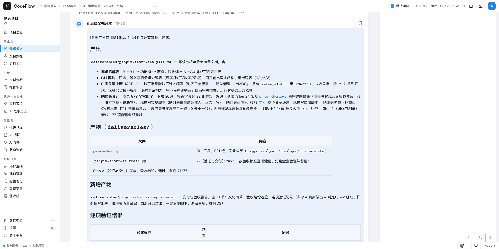
图 7-3 交付产物入库:本次交付归档 8 个文件(过程文档/工具脚本/汇总报告),面板内可滚动查看全部并下载
7.4运行日志与实时终端
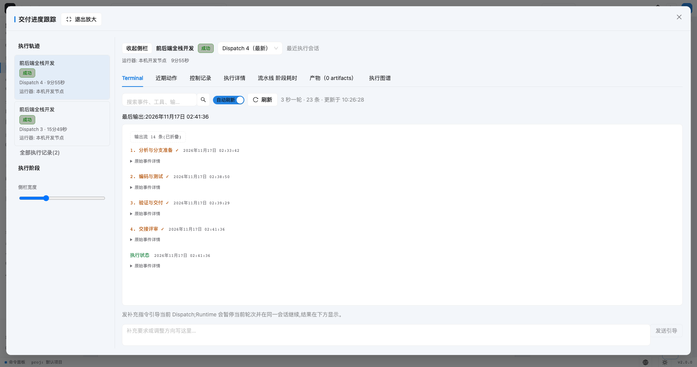
图 7-4 运行轨迹与实时终端:四步交付流程按序带 ✓、等宽时间戳、输出流自动折叠,交付过程可回看
「查看执行」进入执行档案:左侧是四步交付流程与步骤日志,右侧是实时终端输出。日志按步骤折叠,长输出自动收起,时间戳等宽对齐;执行档案同时给出结果摘要——交付结论、产物清单与关键指标都在这一页,不用再翻聊天记录。
7.5人工介入:解开僵局的标准动作
⚠ 人工介入:若 AI 数字员工卡在需要判断的地方(如评审不通过但环境无法满足某项通过条件),在需求评论区留下澄清意见并说明判定口径,下一轮派发会读到这条意见继续——这是解开僵局的标准动作,不用改配置、不用重建派发。
08
CHAPTER 08 / AI WORKERS & SQUADS
AI 数字员工与编队
AI 数字员工是绑定客户端与模型的可执行角色;编队是"谁 + 什么角色 + 哪条交付流程"的交付阵型。
本章内容
8.1AI 数字员工39
8.2版本审核39
8.3编队39
08AI 数字员工与编队
AI 数字员工是绑定客户端与模型的可执行角色;编队是"谁 + 什么角色 + 哪条交付流程"的交付阵型。
入口:左侧导航 → AI 数字员工。
 图 8-1 AI 数字员工管理(数字员工 / 版本审核 / 编队三个页签)
图 8-1 AI 数字员工管理(数字员工 / 版本审核 / 编队三个页签)
8.1AI 数字员工
一个可执行的角色(如"前后端全栈开发"),绑定客户端类型(Claude Code / Codex CLI / Cursor CLI / Gemini CLI / Qoder CLI 等)与模型。模型端点由运行节点侧的 ANTHROPIC_BASE_URL / ANTHROPIC_AUTH_TOKEN / ANTHROPIC_MODEL 决定,同一个数字员工可以配不同的客户端与模型组合。
8.2版本审核
/agents/reviews 页:AI 数字员工配置的变更走版本化,提交后在此页审核,通过才进入上线流转——防止未评审的改动直接跑生产。评审不通过时按稳定问题清单返工,是数字员工的默认协作方式。
8.3编队
多个 AI 数字员工 + 角色构成 + 关联交付流程组成交付阵型。启动交付时选的是编队,平台据此决定由谁、按什么流程干活。
 图 8-2 编队详情(数字员工阵容 / 角色构成 / 交付流程)
图 8-2 编队详情(数字员工阵容 / 角色构成 / 交付流程)
编队卡片的「1/2 在线」徽标 = 该编队当前在线的运行节点数 / 运行节点总数(离线节点上的派发会排队等待)。
 图 8-3 AI 数字员工详情
图 8-3 AI 数字员工详情
09
CHAPTER 09 / DELIVERY PLAYBOOK
交付流程(流程模板)
每个项目定义自己的交付流程;启动交付时选的流程,决定 AI 按什么路径干活。
09交付流程(流程模板)
每个项目定义自己的交付流程;启动交付时选的流程,决定 AI 按什么路径干活。
入口:左侧导航 → 交付流程,页面为「流程模板」列表(流程模版 / 模版间 / 编队工作流三个页签)。
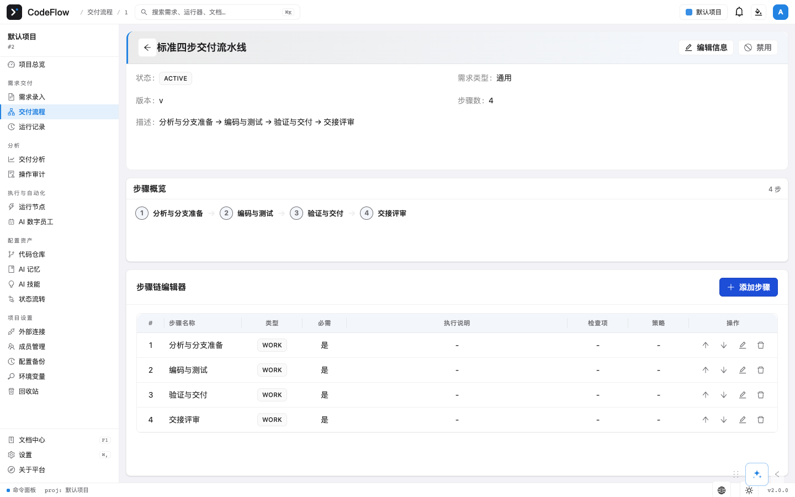
图 9-1 流程模板详情(步骤概览与逐步编辑;列表见「交付流程」页)
9.1流程模版
一次交付的步骤序列(如:分析与分支准备 → 编码与测试 → 验证与交付 → 交接评审),每步含目标、完成门、要求产物。「详情」里可以逐步查看 / 编辑步骤定义。
9.2模版间与编队工作流
| 元素 | 说明 |
|---|
| 模版间 | 模板之间的衔接(开发完成后接评审模板) |
| 编队工作流 | 编队视角的流程编排,按角色分配步骤 |
| 新建 | 手工按步骤定义建流程 |
| AI 生成 | 由 AI 按描述生成流程草案,再手工调整 |
需求启动交付时选择的交付流程,决定 AI 数字员工按什么路径干活。
10
CHAPTER 10 / RUNTIME EXECUTORS
运行节点管理
真正干活的是运行节点——装在你自己的机器上,主动连回平台;代码在内网也没关系。
本章内容
10.1运行节点是什么44
10.2三种运行方式44
10.3状态、容量与分组45
10.4运维红线45
10运行节点管理
真正干活的是运行节点——装在你自己的机器上,主动连回平台;代码在内网也没关系。
入口:左侧导航 → 运行节点。
 图 10-1 运行节点管理(按编队分组;在线/忙碌/离线一目了然)
图 10-1 运行节点管理(按编队分组;在线/忙碌/离线一目了然)
10.1运行节点是什么
运行节点是执行环境:它主动连回平台领取派发,在你自己的机器上跑 AI 数字员工。平台不需要访问你的机器——代码和被测系统可以全在内网。
新建运行节点时需选择:归属 AI 数字员工 / 客户端类型(六种卡片单选)/ 并发数 / 记忆模式;创建成功弹窗直接给出令牌与启动命令。
10.2三种运行方式
| 运行方式 | 行为 | 适用场景 |
|---|
| 前台运行 | 关掉终端即停止 | 调试,看实时输出 |
| 后台挂起 | nohup 挂起,进程崩溃不自愈 | 临时跑一次,能接受手动重启 |
| 系统服务 | install-service,崩溃自愈 + 开机自启 | 推荐:长时间稳定交付 |
复制入口启动命令弹窗与创建成功弹窗都按当前选中的运行方式出命令;复制后贴到运行节点机器执行即可。卸载系统服务用 ymai-codeflow uninstall-service --executor-id <id>。
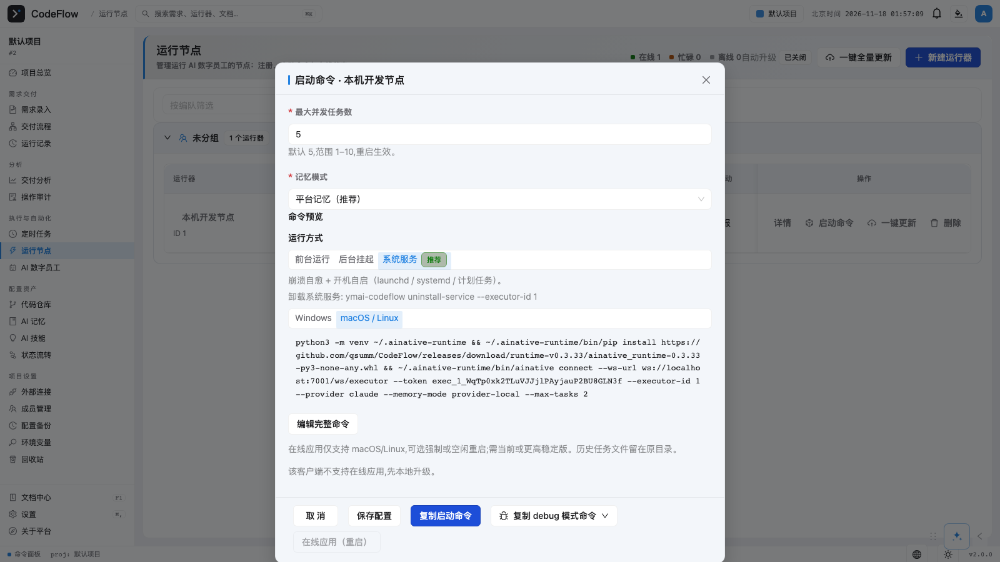
图 10-2 启动命令弹窗(运行方式切到「系统服务」,命令实时重生成)
10.3状态、容量与分组
- 在线状态:心跳判活 + 最近启动时间;离线的运行节点其排队派发会显示等待原因;
- 分组视图:按编队 / 按 AI 数字员工分组;按编队筛选后看目标运行节点;
- 运行节点详情:抽屉查看主机名 / IP / 版本 / 模型 / 最近启动 / 重启记录;
- 自动升级:开启后运行节点版本落后自动升级;「一键全量更新」按编队批量升级到平台推荐版本。
10.4运维红线
⚠ 同一个 executorId+token 同时只允许一个 daemon 实例——后来者会把先来者顶下线。看到状态反复"在线/离线"抖动,先排查是否两个 daemon 用同一份 env 在跑。
运行节点侧安装与运行(注册、环境变量、接入任意 Anthropic 兼容模型端点)在「新建运行器」与启动命令弹窗里都有引导;守护化(开机自启 / 崩溃自愈)即上文「系统服务」运行方式。
11
CHAPTER 11 / REPOSITORIES & SKILLS
代码仓库与 AI 技能
仓库是 AI 干活的代码仓,技能是挂到 AI 数字员工上的能力包。
本章内容
11.1代码仓库47
11.2仓库关系图48
11.3AI 技能49
11代码仓库与 AI 技能
仓库是 AI 干活的代码仓,技能是挂到 AI 数字员工上的能力包。
11.1代码仓库
 图 11-1 代码仓库管理
图 11-1 代码仓库管理
AI 数字员工干活的代码仓库,绑定后交付时代码会检出、修改、提交。
11.2仓库关系图
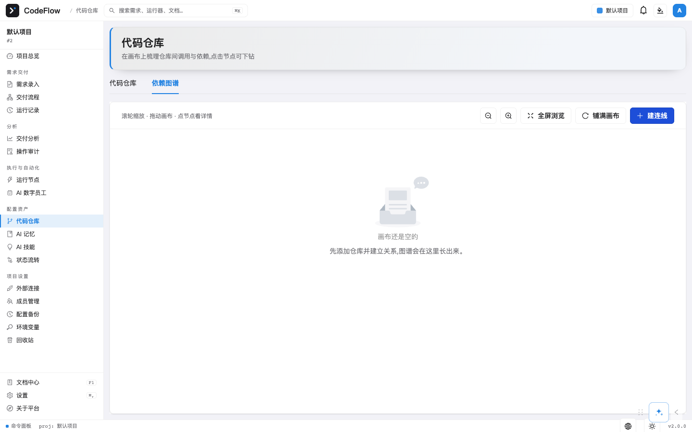
图 11-2 仓库关系图(依赖与调用关系可视化;添加仓库并建立关系后,画布在此呈现)
「代码仓库」页的「依赖图」页签可视化仓库之间的依赖与调用关系,滚轮缩放、拖动布局、点击查看详情。
11.3AI 技能
 图 11-3 AI 技能管理
图 11-3 AI 技能管理
AI 技能是可挂到 AI 数字员工上的能力包(MCP 工具集、提示词、脚本),平台内置技能可直接启用,也支持上传自定义包。踩过的坑沉淀成技能,是第 3 章"上手节奏"的最后一步。
12
CHAPTER 12 / ZENTAO INTEGRATION
外部连接:禅道闭环
三步建绑定,之后禅道 Bug/需求自动进平台、交付结论自动回写评论;状态由人在禅道侧确认。
12外部连接:禅道闭环
三步建绑定,之后禅道 Bug/需求自动进平台、交付结论自动回写评论;状态由人在禅道侧确认。
入口:左侧导航 → 外部连接。当前支持 禅道 ZenTao 18.10+。
 图 12-1 禅道连接配置
图 12-1 禅道连接配置
12.1建绑定(三步)
1禅道连接
填禅道地址(如 http://zentao.example.com:8888)、集成账号、集成密码;点「测试连接」验证,通过后「加载产品」拉取产品列表。
2选择产品
选要接入的禅道产品,设轮询间隔(默认 60 秒),保存绑定。
3自动拉取
平台按间隔轮询该产品的 Bug 与需求,自动建为本地需求;重复拉取不会产生重复需求。
12.2闭环怎么转
禅道 Bug/需求 → 平台自动拉取入库 → 指派 AI 数字员工交付 → 交付结论回写禅道
- 交付结论经备注通道回写到禅道单据的评论,幂等 marker 防重复;
- ⚠ 平台不代改禅道单据状态:单据的「已解决 / 关闭」由你在禅道侧确认后手工操作。修复是否真正闭环是人的判断,平台只负责把交付结论与证据带过去;
- 身份映射:禅道账号在平台内显示为外部用户(带来源标识);
- 绑定级状态映射可配(默认:active→待处理、resolved→待验证、closed→已完成),用于把禅道状态同步成平台需求的状态,不反向改写禅道。
⚠ 平台侧需求流转完成后,禅道单据状态可能仍停在旧值——这是设计如此(见上一条),不是同步失败。
13
CHAPTER 13 / TAPD INTEGRATION
外部连接:TAPD(VIP 专享)
VIP 用户专享能力。与禅道同构的四步接入:TAPD 项目绑定 → 自动拉取 → 交付 → 结论写回评论;结果未知时不盲目重发,读回确认。
本章内容
13.1建绑定(四步)54
13.2同步进来的东西长什么样55
13.3交付结论怎么回写55
13.4部署前提56
13外部连接:TAPD(VIP 专享)
VIP 用户专享能力。与禅道同构的四步接入:TAPD 项目绑定 → 自动拉取 → 交付 → 结论写回评论;结果未知时不盲目重发,读回确认。
VIP 用户专享TAPD 集成面向 VIP 版本,开通后在「外部连接」页签使用;禅道集成对所有版本开放。
入口:左侧导航 → 外部连接 → TAPD 页签。除禅道外,平台还能从 TAPD 拉取需求与缺陷,并把交付结论写回原单据。
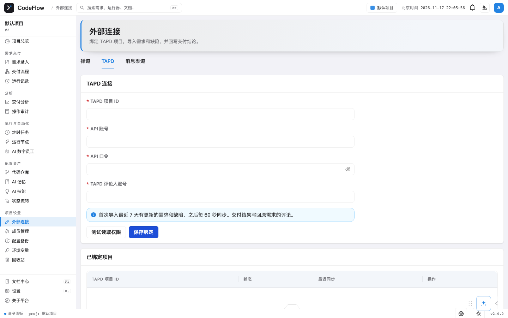
图 13-1 TAPD 连接配置
13.1建绑定(四步)
1填连接信息
TAPD 项目 ID(工作区 ID,纯数字)、API 账号、API 口令、TAPD 评论人账号(交付备注的署名,建议用专用机器人账号)。
2测试读取权限
点「测试读取权限」,平台用该凭据各拉一条需求与一条缺陷,验证鉴权、项目归属与字段格式。
3保存绑定
保存后平台开始按 60 秒轮询该项目的需求与缺陷,自动建为本地需求。
4随时手动同步
「已绑定项目」表里点「立即同步」可立刻拉一轮;「暂停」用于临时停止轮询,恢复后接着增量拉取。
 图 13-2 已绑定项目(未绑定时的空态;绑定成功后这里列出项目 ID、状态与最近同步时间)
图 13-2 已绑定项目(未绑定时的空态;绑定成功后这里列出项目 ID、状态与最近同步时间)
13.2同步进来的东西长什么样
- 需求(Story)与缺陷(Bug)一起进:在需求里类型分别标
REQ 与 BUG,来源标 TAPD,标题下可直达 TAPD 原单据; - 外部 ID 形态
{项目 ID}:{story|bug}:{单据 ID},例 1:bug:1010201;同一单据重复拉取不会产生重复需求,只会刷新标题、正文、类型与优先级; - 优先级映射:high / urgent → 1,medium / middle / normal → 2,low → 3;
- 时间窗口:首次拉取最近 7 天内有更新的单据,之后按轮询增量拉取;
- 正文以 TAPD 为准:平台只把 TAPD 的 HTML 描述转成纯文本展示,不反向改写 TAPD 内容。
13.3交付结论怎么回写
TAPD 需求/缺陷 → 平台自动拉取入库 → 指派 AI 数字员工交付 → 交付结论写回 TAPD 评论
- 交付完成后,运行节点把交付备注回写到原单据的评论(需求走
entry_type=stories、缺陷走 entry_type=bug,内容为 HTML,署名为上面填的评论人账号); - 每条回写带唯一 marker,重复回写不会产生重复评论;
- 若 TAPD 侧返回 5xx(结果未知,可能已入库),平台不会盲目重发,而是把这次回写挂起,随后按 marker 回读评论确认是否已落地,确认后才置为完成;
- ⚠ 与禅道一致:平台只写评论,不改单据状态,关闭/已解决仍由你在 TAPD 侧确认。
13.4部署前提
TAPD 的 API 口令以密文存放,平台需要一把凭据加密主密钥:
export AINATIVE_SECRET_MASTER_KEY=$(openssl rand -base64 32)
- 未配置时平台照常启动,只有保存绑定 / 同步 / 回写时报错,并提示该配哪个环境变量;
- 主密钥多节点必须一致;更换主密钥后,已保存的绑定需要重新保存一次。
14
CHAPTER 14 / NOTIFICATION CHANNELS
消息渠道(钉钉/飞书)
绑定群机器人后,派发进展、交接、评审结论自动推群;平台级选中渠道决定通知设置里显示哪个 IM 列。
本章内容
14.1渠道绑定58
14.2通知设置里的 IM 列58
14消息渠道(钉钉/飞书)
绑定群机器人后,派发进展、交接、评审结论自动推群;平台级选中渠道决定通知设置里显示哪个 IM 列。
入口:左树「外部连接」,或平台配置 → 协作通知。
 图 14-1 消息渠道(外部连接页)
图 14-1 消息渠道(外部连接页)
14.1渠道绑定
- 绑定钉钉 / 飞书群机器人后,派发进展、交接、评审结论等事件可推送到群;
- 支持项目机器人配置;渠道绑定是项目级的。
14.2通知设置里的 IM 列
平台级选中渠道(平台配置 → 协作通知 → 选择钉钉/飞书)决定「通知设置」里显示哪个 IM 列:选中飞书后,每类事件可独立开关「站内 / 飞书」;启用飞书需先填入飞书开放平台应用的 appKey / appSecret。
15
CHAPTER 15 / PERSONAL SETTINGS & MCP
个人设置与 MCP 令牌
一枚 MCP 令牌,让 Claude Code / Cursor 在终端里直接操作平台;令牌即身份,泄露即吊销。
15个人设置与 MCP 令牌
一枚 MCP 令牌,让 Claude Code / Cursor 在终端里直接操作平台;令牌即身份,泄露即吊销。
入口:右上角头像 → 个人设置。页签:基本信息 / IM 工号 / 企业身份 / MCP 令牌 / 修改密码 / 账号注销。
 图 15-1 个人设置 → MCP 令牌
图 15-1 个人设置 → MCP 令牌
| 元素 | 说明 |
|---|
| MCP 服务地址 | http://<平台>/api/mcp/<MCP_TOKEN>/,建令牌时完整 URL 只展示一次 |
| 开放工具 / 能力聚合 | 当前 MCP 面暴露的工具数与能力数 |
| 访问令牌 | 令牌列表:名称 / 前缀 / 创建时间 / 最后使用 / 状态 |
怎么用:把 MCP 地址配到你的 Claude Code / Cursor 等 CLI(claude mcp add --transport http ainative <url>),即可在终端里让 AI 直接操作平台:建需求、查需求、配置编队、启动交付等。令牌权限跟随你在目标项目内的权限。
⚠ 令牌即身份,不要提交进代码库;泄露后在列表里吊销即可,平台侧立即失效。
16
CHAPTER 16 / PROJECT & PLATFORM SETTINGS
项目设置与平台配置
成员、状态机、环境变量、配置备份在「项目设置」组;品牌与平台级选项在右上「平台配置」;⌘, 打开设置弹窗。
本章内容
16.1项目设置组62
16.2平台配置63
16.3成员与角色64
16项目设置与平台配置
成员、状态机、环境变量、配置备份在「项目设置」组;品牌与平台级选项在右上「平台配置」;⌘, 打开设置弹窗。
16.1项目设置组
| 页面 | 入口 | 说明 |
|---|
| 状态流转 | 左树 → 状态流转 | 需求状态机模板,按需求类型分域(需求 REQ / 任务 TASK / 缺陷 BUG 各自独立模板),定义状态与合法流转 |
| 环境变量 | 左树 → 环境变量 | 项目级环境变量,AI 数字员工执行时可读取(值默认脱敏展示) |
| 配置备份 | 左树 → 配置备份 | 一键备份当前项目的交付流程、AI 数字员工及版本、编队、仓库关系、AI 记忆、AI 技能等,可恢复 |
| 设置弹窗 | 左树底部「设置 ⌘,」 | 左类目 + 右内容:AI 配置 / 通知配置 / 系统配置 |
 图 16-1 项目环境变量
图 16-1 项目环境变量
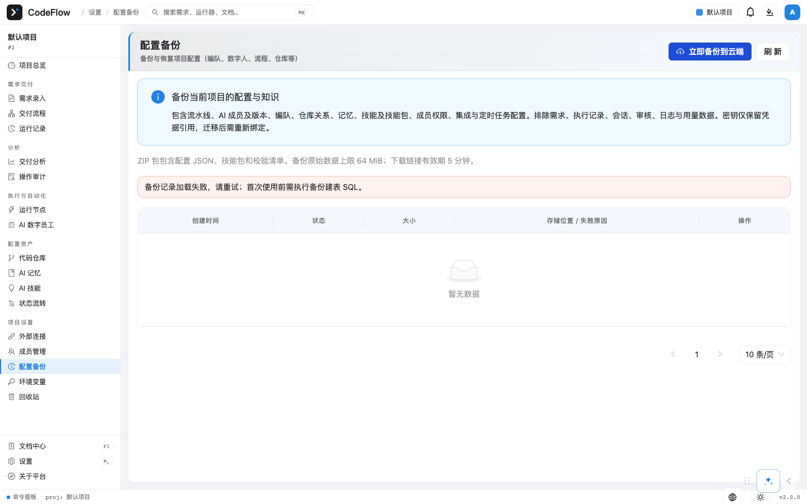
图 16-2 配置备份(一键备份,可恢复)
16.2平台配置
| 页面 | 入口 | 说明 |
|---|
| 品牌配置 | 右上「平台配置」 | 平台名称 / Logo / 主题色 / 消息渠道,变更即时生效于全平台 |
| 协作通知 | 平台配置 → 协作通知 | 选择平台级 IM 渠道(钉钉 / 飞书),决定通知设置显示哪个 IM 列 |
| 文档与帮助 | 平台配置 → 文档 | 内置帮助中心与版本信息 |
 图 16-3 平台配置(品牌 / 消息渠道)
图 16-3 平台配置(品牌 / 消息渠道)
16.3成员与角色
 图 16-4 成员管理(成员 / 角色 / 申请)
图 16-4 成员管理(成员 / 角色 / 申请)
成员管理页含三个页签:成员(邀请 / 移除 / 只读者 / Owner 移交)、角色(自定义角色与权限)、申请(待审批的访问申请)。移除成员前先确认其在项目内的派发与待办归属。
17
CHAPTER 17 / OBSERVABILITY & AUDIT
运行记录、交付分析与操作审计
交付完不是结束:运行记录看每次执行,交付分析找瓶颈,操作审计留证据。
本章内容
17.1运行记录67
17.2交付分析68
17.3操作审计与 AI 记忆68
17运行记录、交付分析与操作审计
交付完不是结束:运行记录看每次执行,交付分析找瓶颈,操作审计留证据。
17.1运行记录
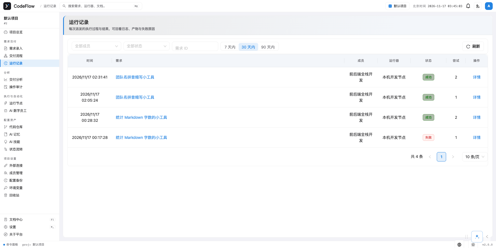
图 17-1 运行记录(全部派发执行历史)
全部派发的执行历史(状态 / 耗时 / 所属需求),点开看单次执行详情与日志。与需求详情里的"历史执行"是同一份数据的两个视角:这里看全局,那里看单条需求的上下文。
17.2交付分析
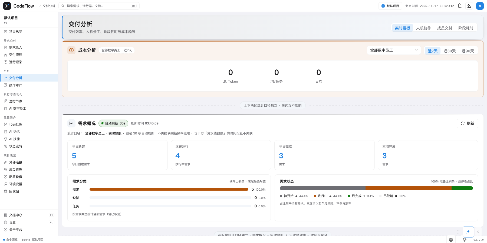
图 17-2 交付分析(实时看板:工作项概况 + 分类与状态占比)
四个页签:实时看板(工作项概况 + 分类与状态占比)、人机协作(人做了哪些判断、AI 做了哪些执行)、工作项交付(按类型与周期看交付表现)、阶段耗时(哪一步在拖)。成本分析卡按 Token 维度统计,用于回答"这批交付花了多少"。
17.3操作审计与 AI 记忆
 图 17-3 操作审计(全部敏感操作留痕)
图 17-3 操作审计(全部敏感操作留痕)
- 操作审计:全部敏感操作留痕(谁、何时、对什么、做了什么),支持按操作类型过滤;
- AI 记忆:AI 数字员工长期记忆的查看与清理;
- 通知:站内通知中心,配合第 14 章的消息渠道做群播报。
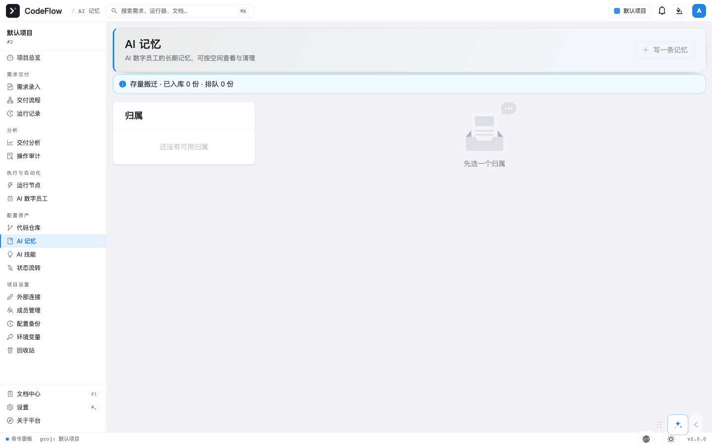
图 17-4 AI 记忆管理
 图 17-5 站内通知中心
图 17-5 站内通知中心
18
CHAPTER 18 / SCHEDULED TASKS
定时任务:让交付按计划自己发生
按 cron 计划自动派发数字员工;任务、运行记录与健康度一页看全。
本章内容
18.1两个页签各看什么71
18.2新建一个定时任务71
18.3任务详情与运行记录72
18定时任务:让交付按计划自己发生
按 cron 计划自动派发数字员工;任务、运行记录与健康度一页看全。
入口:左侧导航 → 定时任务。页面分「定时任务」「定时需求」两个页签。
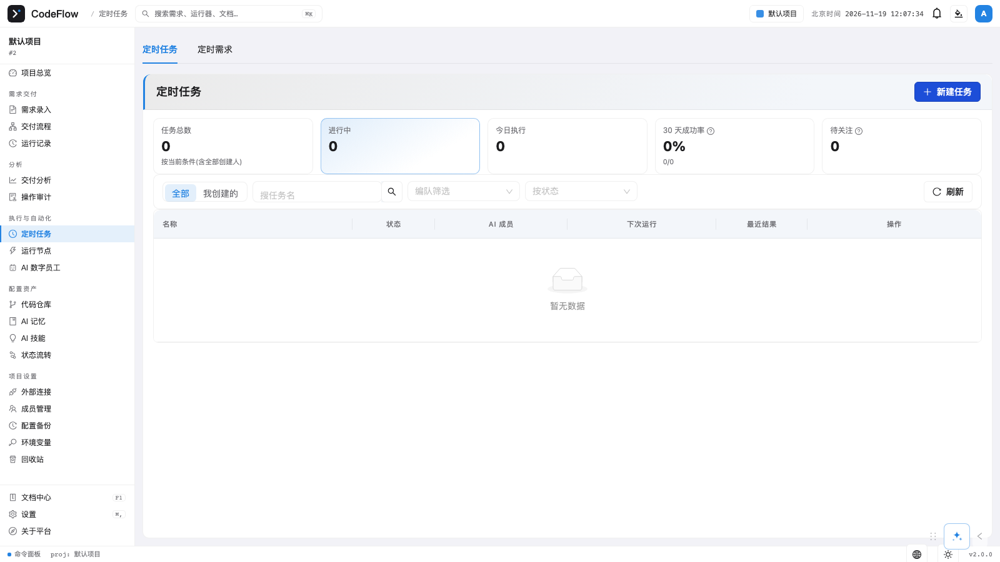
图 18-1 定时任务页(「定时任务 / 定时需求」双页签 + 全部 / 我创建的 范围切换 + 四张统计卡)
18.1两个页签各看什么
| 页签 | 内容 |
|---|
| 定时任务 | 计划本体:名称、状态、起始数字员工、下次执行时间;可新建、编辑、暂停/启用、立即执行、删除 |
| 定时需求 | 由定时任务派生出的需求列表:每次触发生成一个需求,按计划持续产出 |
顶部还有「全部 / 我创建的」范围切换,只看你自己建的任务。
18.2新建一个定时任务
1填基本信息
名称、指令(每次执行要做什么)、编队、起始数字员工、时区。
2选触发方式
单次(指定时间)或 cron 周期;可附参考文档,让数字员工按文档口径执行。
3定执行策略
会话重叠策略、错过执行策略(错过时补跑/跳过)、是否启用。
权限定时任务需要「读写」权限才能新建、暂停、立即执行;只读用户可以看列表与运行记录,但按钮不可用。
18.3任务详情与运行记录
详情页上半部是任务配置(编队、起始数字员工、调度表达式与会话重叠策略、错过执行策略),下半部是运行记录表:每次触发的运行编号、状态、触发方式、计划时间与实际结束时间。点运行编号进入运行详情。
运行详情可以看到这次执行的全过程:产物、评论、事件流、参与方、派生需求与交付进度,并支持取消与暂停。
4张
统计卡
任务总数 · 进行中 · 今日执行 · 30 天成功率
4种
任务状态
启用中 · 已暂停 · 已跑完 · 已归档
1次
立即执行
「立即执行」会立刻创建一次运行,不等计划时间
19
CHAPTER 19 / ABOUT THE PLATFORM
关于平台与文档中心
「交付 9 号线」地铁图把九段生命周期画成一条地铁线;文档中心内置分步图文。
本章内容
18.1交付 9 号线74
18.2文档中心与 MCP 技能包75
19关于平台与文档中心
「交付 9 号线」地铁图把九段生命周期画成一条地铁线;文档中心内置分步图文。
入口:左树底部「关于平台」。
 图 19-1 关于平台——「交付 9 号线」地铁图(主线路串九站,虚线回流)
图 19-1 关于平台——「交付 9 号线」地铁图(主线路串九站,虚线回流)
18.1交付 9 号线
- 九段(需求澄清 → 启动 → 开发 → 验证 → 评审 → 部署 → 测试 → 交付 → 运维)化作地铁 9 号线的九个站:主线路串起上 5 下 4 站,小列车沿线路巡航,驶过的站环逐个点亮;
- 右上「列车状态」随列车位置播报「即将到达 · 站名(阶段)」,并按阶段着色:进行中=主题蓝、已交付=绿、持续运营=青;
- 虚线自「运维」回流「需求澄清」始发站,表达「交付完成自动回流下一班」的闭环;
- 票务行展示当前部署版本(取自平台品牌配置);右上「重看首次使用引导」可重放第 3 章的引导页。
18.2文档中心与 MCP 技能包
 图 19-2 文档中心
图 19-2 文档中心
- 左树底部「文档中心」(F1)直达;内容随版本内置,含分步图文与常见操作;
- 平台同时内置
ainative MCP 技能包(help/assets),供外部 CLI 客户端加载后获得平台操作指引。
20
CHAPTER 20 / EVERYDAY WORKFLOWS
日常怎么用:推荐工作流
三条高频动线:禅道缺陷全自动修复回写、平台内需求交付、外部 CLI 操作平台。
本章内容
20.1场景 A:缺陷全自动修复与回写77
20.2场景 B:平台内需求 → 交付77
20.3场景 C:外部 CLI 里操作平台77
20.4三条实践建议78
20日常怎么用:推荐工作流
三条高频动线:禅道缺陷全自动修复回写、平台内需求交付、外部 CLI 操作平台。
20.1场景 A:缺陷全自动修复与回写
1管理员一次性完成绑定
第 12 章的三步绑定,之后无需人工介入。
2自动入库
禅道新 Bug 在 ≤ 轮询间隔内自动出现在需求看板(带「来自 ZenTao」来源链接)。
3指派并启动交付
给需求指派编队并启动交付——之后不需要人守着。
4按需回答
有澄清问题会停在「待你处理」,@ 回复即可。
20.2场景 B:平台内需求 → 交付
2澄清对齐
启动交付,选编队;对不清楚的点先用澄清对话对齐。
3跟踪与验收
在交付进度跟踪里看执行,产物直接下载验收。
4返工
验收不通过 → 评论返工意见 @AI数字员工,或重试派发。
20.3场景 C:外部 CLI 里操作平台
1建令牌
个人设置 → MCP 令牌 → 新建令牌,复制一次性完整 URL。
2接入 CLI
claude mcp add --transport http ainative <url>。
3直接说人话
在 Claude Code 里直接说"帮我建一个需求,标题是……"——AI 调平台 MCP 完成。
20.4三条实践建议
✓
需求写清验收标准
AI 数字员工按"完成门"自检,验收标准越明确返工越少。
⚠
别绕过平台改禅道状态
状态机映射是双向的,手工错位会卡同步。
◷
运行节点保持常驻
排队派发靠运行节点上线自动唤醒,运行节点越稳定交付越连贯。
21
CHAPTER 21 / KNOWN LIMITS & NOTICES
已知边界与使用须知
这些是设计如此、或当前版本明确不做的事——遇到对应现象,先对照这里,再判断是不是故障。
本章内容
21.1平台行为边界(设计如此)80
21.2能力范围边界(当前不做)80
21.3运维红线80
21已知边界与使用须知
这些是设计如此、或当前版本明确不做的事——遇到对应现象,先对照这里,再判断是不是故障。
21.1平台行为边界(设计如此)
不代改外部单据状态
交付结论只回写禅道 / TAPD 评论,「已解决 / 关闭」仍需人工在外部系统按。修没修好是人的判断,工具代关单等于把验收责任扔给机器。
外部需求不可平台侧删除
禅道 / TAPD 拉来的需求删除受保护,必须回源头处理。源头数据以源头为准,平台侧删除会造成双端不一致。
不反向改写外部内容
TAPD 正文只读展示;状态映射只把外部状态同步成平台状态,不反向改写。平台是消费方,不是外部系统的编辑器。
排队不空转
运行节点离线时派发按指数退避等待并显示原因,上线自动唤醒。宁可等得明白,不要假执行。
21.2能力范围边界(当前不做)
需求说不清,它救不了
澄清能把"没说清"问出来,但答案得在你心里。
不装环境
运行节点上缺 JDK、Maven、Node,任务就会失败;平台派活,不装环境。
不是无人值守
澄清要你参与,方案确认要你点头,验收要你看;省掉的是"盯着干活",不是"做判断"。
模型额度是真门槛
长任务中断在中间,重跑 Token 再花一遍;确定性任务建议用 Flash 模型,澄清和评审用旗舰模型。
21.3运维红线
- 主密钥多节点必须一致(
AINATIVE_SECRET_MASTER_KEY);更换后已保存的外部绑定需重新保存; - 同一 executorId+token 只跑一个 daemon,双实例会互相顶下线;
- 项目删除是级联高危操作,先确认回收站与配置备份;
- MCP 令牌即身份,完整 URL 只展示一次,泄露立即吊销。
22
CHAPTER 22 / DEFAULT PARAMETERS
默认参数速查
常用参数与默认值的一键对照,按"改哪里"排序。
本章内容
22.1模型与执行参数82
22.2外部系统与凭据82
22.3界面与文件82
22默认参数速查
常用参数与默认值的一键对照,按"改哪里"排序。
22.1模型与执行参数
| 参数 | 默认值 | 说明 |
|---|
| ANTHROPIC_BASE_URL | — | 模型端点地址;运行节点侧任意 Anthropic 兼容端点(Claude / MiniMax / GLM / Kimi / DeepSeek / 私有模型) |
| ANTHROPIC_AUTH_TOKEN | — | 模型端点的鉴权凭据 |
| ANTHROPIC_MODEL | — | 使用的模型名 |
| ANTHROPIC_MAX_TURNS | 24 | 单次执行的模型最大轮次;轮次不足会导致交付中断 |
22.2外部系统与凭据
| 参数 | 默认值 | 说明 |
|---|
| AINATIVE_SECRET_MASTER_KEY | — | 凭据加密主密钥;多节点必须一致,TAPD(VIP)等外部绑定依赖它 |
| 外部系统轮询间隔 | 60 秒 | 禅道 / TAPD 自动拉取单据的间隔 |
| MCP 令牌 URL | 仅创建时展示一次 | 完整 URL 丢失需吊销重建 |
| 派发退避 | 指数退避 + 上线自动唤醒 | 运行节点离线时的排队策略 |
22.3界面与文件
| 参数 | 默认值 | 说明 |
|---|
| 需求附件 | 单个 5MB / 总计 20MB | 上传需求与设计上下文附件的体积上限 |
| 自定义背景 | 1.2MB | 工作台壁纸上传上限,前端自动压缩 |
23
CHAPTER 23 / FAQ
常见问题
十二个最常被问到的问题,按"排障 → 澄清 → 权限 → 集成"排列。
本章内容
23.1派发与执行84
23.2澄清与验收84
23.3外部系统与集成84
23.4账号、令牌与数据85
23常见问题
十二个最常被问到的问题,按"排障 → 澄清 → 权限 → 集成"排列。
23.1派发与执行
Q派发一直"排队中"怎么办?
看交付进度跟踪里的等待原因。「等运行器上线」= 运行节点没连上(去运行节点页看在线状态、检查 daemon 是否存活、是否同 executorId 起了两个实例);「等待运行器容量」= 在跑的任务太多,等空闲或加运行节点。排队有指数退避与上线自动唤醒,不需要手动重发。
QAI 数字员工交付失败了,先看什么?
交付进度跟踪 → 失败派发 → 查看执行:日志里通常能看到是模型端点问题(配额 / 网络)、仓库权限问题还是步骤完成门未达标。修复后点「重试」。
Q为什么第一轮失败后重试能接着跑?
重试是原样重发并记为新 attempt,前几轮执行记录全部保留;新一轮会读到评论区的澄清意见,因此往往能跨过上一轮的卡点。
Q运行节点状态反复在线/离线抖动?
极可能是同一 executorId+token 起了两个 daemon 实例,后来者把先来者顶下线。先排查是否两份 env 在跑,再重启。
23.2澄清与验收
Q需求描述写不清楚会不会导致交付跑偏?
会。澄清能把没说清的问出来,但答案得在你心里;建议启动交付前先用澄清对话把验收标准写成可执行检查项。
Q模型能换吗?
能。运行节点侧任意 Anthropic 兼容端点即可,改运行节点 env 的 ANTHROPIC_BASE_URL / ANTHROPIC_AUTH_TOKEN / ANTHROPIC_MODEL 后重启 daemon。
Q需求里能上传文档吗?
可以。需求详情支持上传需求 / 设计上下文附件,任意类型,单个 5MB、总计 20MB,也可直接粘贴截图。
23.3外部系统与集成
Q禅道需求拉取了但没回写?
检查三处:绑定是否启用、本地需求是否流转到了与禅道映射的完成类状态、时间线上回执事件的状态。回执失败会在时间线留痕并自动重试。
Q平台流转完了,禅道状态怎么没变?
设计如此:平台只回写交付备注,不代改禅道单据状态(见第 12 章)。「已解决 / 关闭」请回禅道侧确认后手工操作。
QTAPD 同步报鉴权失败?
先确认账号已开通 TAPD 集成(VIP 专享);平台侧凭据没问题时,再确认 API 账号对目标项目有读权限,平台会在「测试读取权限」时同时验证鉴权、项目归属与字段格式。
23.4账号、令牌与数据
QMCP 完整令牌 URL 丢了?
令牌只在创建时展示一次,丢了就吊销重建。列表里的"前缀"只用于辨认。
Q需求删错了?
回收站恢复。外部来源(禅道 / TAPD)需求不可删,需回源头处理。
Q操作审计里为什么有我没做过的操作?
外部来源需求的拉取与回写也记名在集成账号下,带来源标识;可按操作类型过滤确认。
24
CHAPTER 24 / REVISION HISTORY
版本更新记录
本页记录手册各版本的主要变化,便于对照当前平台行为。
24版本更新记录
本页记录手册各版本的主要变化,便于对照当前平台行为。
24.1修订记录
| 版本 | 日期 | 主要变化 |
|---|
| v2.1.0 | 2026 年 11 月 | 全册版式重构:每章增加整页扉页、章 / 节两级目录与真实页码;新增关键数字卡、对比表、FAQ、已知边界、参数速查与尾页二维码 |
| v2.0.4 | 2026 年 11 月 | 新增「联系与支持」章与 PDF 封底页(公众号二维码) |
| v2.0.3 | 2026 年 11 月 | 客户演示前整改五项:状态模板按需求类型分域;补「同步外部系统」端点;按钮文案整改;消耗口径统一为 Token;空态友好化 |
| v2.0.2 | 2026 年 11 月 | 全册按最新界面实机重写,改为三部分结构,新增阅读指引、已知边界与默认参数速查,配图重编 |
| v2.0.1 | 2026 年 11 月 | 新增「外部连接:TAPD」整章;禅道闭环按平台实际行为订正 |
| v2.0.0 | 2026 年 11 月 | 手册编号对齐平台版本;交付验证后增补项目总览 KPI 与消息渠道说明 |
| v1.2 | 2026 年 11 月 | 大改版全量更新:登录页 editorial 背景 + 墨色横幅设计系统 + 主题工作台 + 运行节点三模式 |
| v1.1 | 2026 年 11 月 | 全量功能补齐 + 封面重设计,新增 28 个页面与关键交互 |
| v1.0 | 2026 年 11 月 | 首版,覆盖当前构建全部页面与关键交互 |
25
CHAPTER 25 / CONTACT & SUPPORT
联系与支持
遇到手册没覆盖的问题,从这里找到我们。
25联系与支持
遇到手册没覆盖的问题,从这里找到我们。
25.1支持渠道
| 渠道 | 入口 | 适合什么 |
|---|
| 问题反馈 | CodeFlow 仓库 → Issues | 缺陷、建议优先走 Issue,附运行环境与日志更易定位 |
| 公众号 | 一鸣AI编程 | 产品更新、使用技巧、AI 交付实践文章,第一时间在公众号发布 |
| 文档 | 仓库 docs/ 目录 | 本手册、部署指南、走查报告等全部随库维护 |
25.2扫码关注公众号
微信扫码关注公众号「一鸣AI编程」,获取 CodeFlow 的最新动态与实操分享;文章不定时更新,回复关键词可检索历史内容。
图 25-1 公众号「一鸣AI编程」二维码——回复 codeflow 获取部署包与部署指引
CODEFLOW
从需求到交付 · 一站式 AI 交付平台
让每一次交付,都经得起验证
微信扫码关注公众号 「一鸣AI编程」 · 回复 codeflow 获取部署包